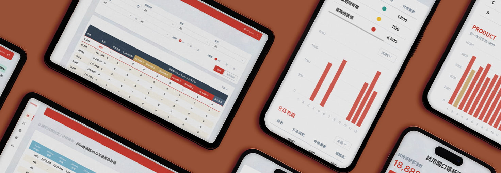

惠氏這個專案有點特別，它的核心任務是為不同角色的業務人員，各自打造一套屬於他們的報表平台
有人用手機查當月業績，有人在電腦處理橫跨整年的財務數字和多品牌報表，面對的使用者和情境都不一樣。但核心問題始終一樣：怎麼讓人在密密麻麻的數字裡，快速找到屬於自己的那份資訊，不迷路、不出錯
不同角色登入看到的東西不同，報表欄位橫跨多月、裝置情境也不一樣，如何讓每個人都能在對的地方找到對的資訊，是這個系列專案最核心的設計挑戰

電腦報表欄位多、跨度長，用凍結列搭配斑馬紋讓視線好對齊，再加上欄位動態篩選，讓使用者只看自己在意的資訊。針對不同登入角色，用底色區分業務專屬欄位和管理者才看得到的資料—不用猜，一眼就知道自己的閱讀範圍
報表平常是拿來看的，只有需要改的時候才進編輯。把瀏覽和編輯拆成兩個模式—閱讀時畫面乾淨，不會誤觸；切換進編輯後，系統自動帶入格式提示（ex: 自動補%），讓修改更順手、更不容易出錯
數字多不代表好讀。把關鍵業績指標從表格裡抽出來轉成視覺化圖表，讓管理者和業務不用逐格掃描，重點自然跳出來。手機上也以圖表為主要呈現方式，讓業務能快速掌握當月成績
自定義視圖－不同角色關注的重點不同，財務和業務想看的欄位根本不一樣。如果重來，會想加入「儲存常用視圖」的功能，讓使用者一鍵切換自己的閱讀版本，不用每次都重新篩選
異常數據警示－現在的設計讓數字好讀，但還是需要使用者自己去找問題。會想在視覺上加入自動標註—ex: 達成率偏低的欄位自動變色、加上提示，讓問題主動跳出來，而不是等人發現